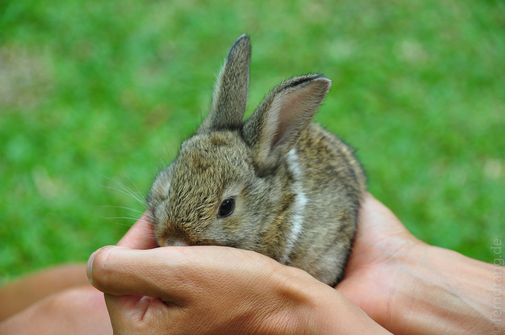
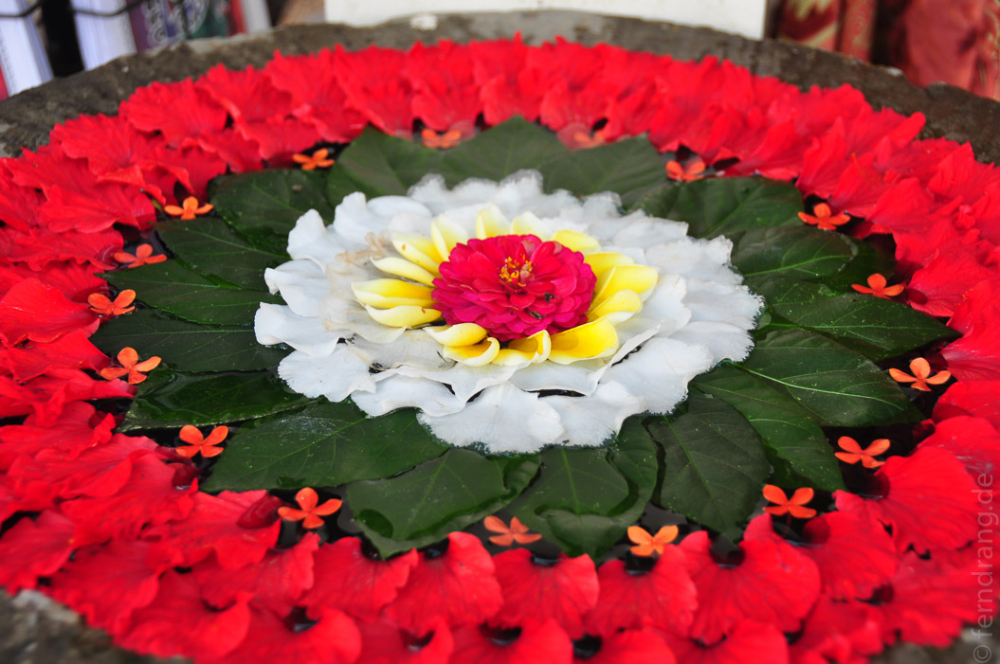
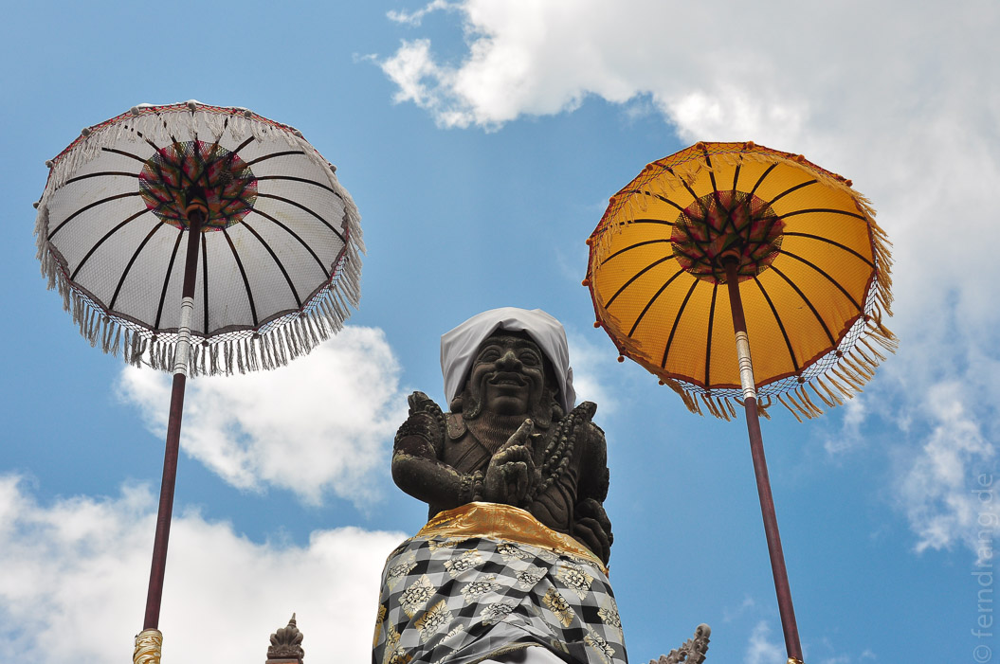
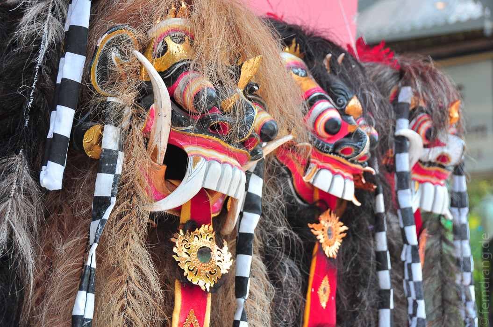

Den letzten Tag in Seminyak haben wir noch ganz faul am Strand verbracht. Wir konnten uns zwar nicht aufraffen einen Surfkurs zu machen, der Wellengang schien aber durchaus dafür geeignet. Nach soviel Faulenzen haben wir die Fahrt nach Ubud total gestresst im Taxi im Stau begonnen. Glücklicherweise hat der Bus nach telefonischer Not-Ankündigung noch auf uns gewartet.
In Ubud, das mitten in Reisterrassen und grün bewaldeten Hügeln liegt, sind wir im kleinen Hotel "Pramesti" gelandet. Vor unserer Hütte ist eine kleine Terrasse, von der aus wir die hoteleigene Kanienchenfamilie durch den Garten hoppeln sehen können. Davon abgesehen könnte die Bleibe etwas unschimmeliger sein.
 Der Ort besteht hauptsächlich aus zwei Straßen, die gesäumt sind von Hotels, Restaurants und Shops. Die künstlerische Ausbeute, mit der der Ort prahlt, erschöpft sich in knallbunten Urwalbildern und abgemalten "Originalen". Die meisten Restaurants und Hotels sind aber sehr hübsch und liebevoll gestaltet. Zwischen soviel balinesischer Wohnkunst fallen die vielen Tempelchen kaum auf.
 